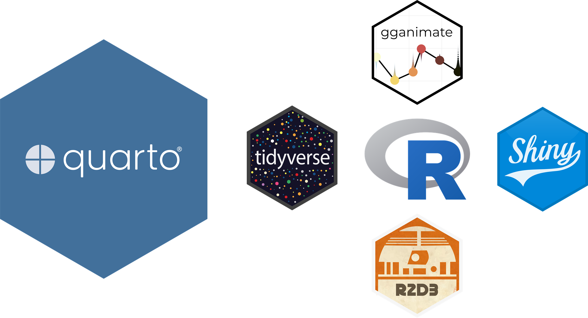
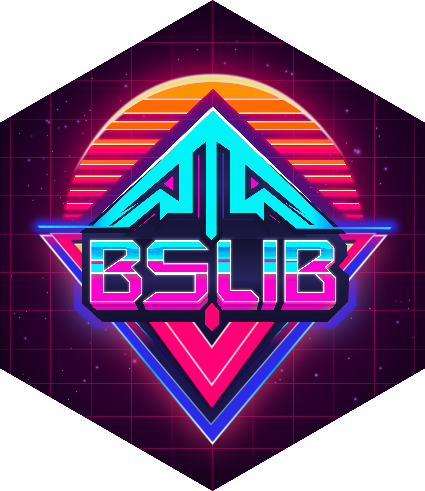
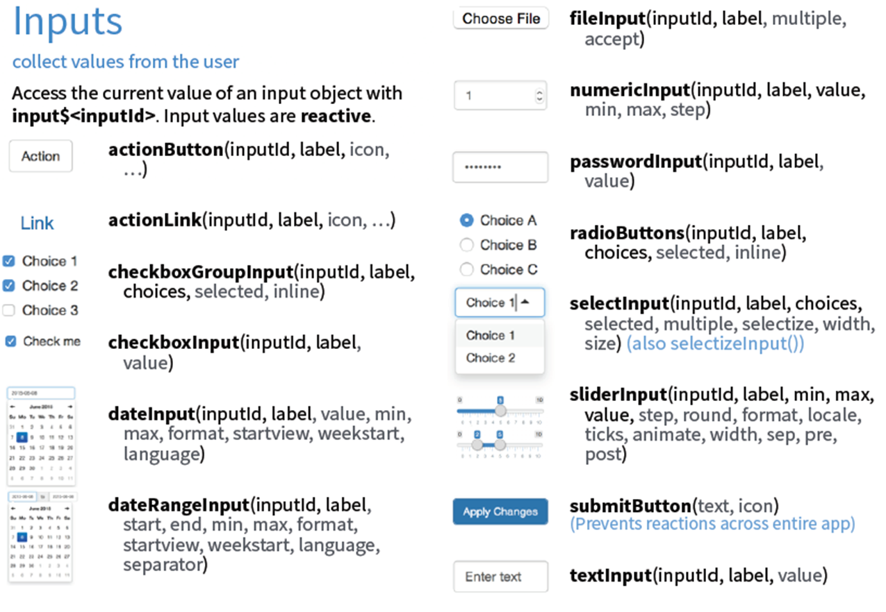

library(shiny)
library(bslib)
library(tidyverse)
library(plotly)
ui <- page_sidebar(
title = "A Simple Shiny App",
sidebar = sidebar(
sliderInput(
inputId = "bins",
label = "Number of bins:",
min = 1, max = 50, value = 30
)
),
card(
card_header("Histogram"),
plotlyOutput(outputId = "distPlot")
)
)
server <- function(input, output) {
output$distPlot <- renderPlotly({
x <- faithful[, 2]
gg <- ggplot() +
geom_histogram(
aes(x = x), bins = input$bins, fill = 'darkgray', color = 'white'
) +
labs(
x = 'Waiting time to next eruption (in mins)',
y = "Frequencies",
title = 'Histogram of waiting times'
)
ggplotly(gg)
})
}
shinyApp(ui = ui, server = server)
인터랙티브 교수ㆍ학습 웹 앱의 디자인 2
Shiny를 활용한 웹 앱 제작
Shiny를 활용한 웹 앱 제작
이상일(서울대학교 지리교육과 교수)
2026-01-09
인터랙티브 웹 앱 구상 발표
일시: 2026년 1월 12일(월)
-
주제: 사회과의 통합형 주제로서의 인구
고출산, 저출산, 고령화, 인구 편중, 인구 절벽, 지역 소멸, 학령 인구 감소 등
전공 교과와 결합 혹은 통합형 사회과 수업
데이터: WPP 2024 그리고/혹은 KOSIS
-
발표 내용
- 주제 선정 이유, 교수ㆍ학습 설계(학교급, 단원, 차시 등)
- 웹 앱 디자인: 레이아웃 요소, 내용 요소, 상호작용 요소
발표 방식: 5~10분 정도의 프레젠테이션
Quarto/R 기반의 웹 앱 개발 프레임워크

Shiny: 서버-기반 웹 앱 개발 프레임워크
리소스: Shiny 홈페이지
-
Shiny for R(https://shiny.posit.co/r/)
Shiny for Python(https://shiny.posit.co/py/)
-
11개 예시
-
예시의 이름 검색:
runExample()- “01_hello”, “02_text”, “03_reactivity”, “04_mpg”, “05_sliders”, “06_tabsets”, “07_widgets”, “08_html”, “09_upload”, “10_download”, “11_timer”
예시의 웹 앱 및 코드 보기:
runExample("01_hello", display = "showcase")
-
리소스: 웹북
확장: bslib 패키지

기본 구조
-
UI부분: 프론트엔드(front-end) 부분- 입력을 받는 부분 + 출력을 나타내는 부분
-
Server부분: 백엔드(back-end) 부분- 받은 입력을 바탕으로 출력을 산출하는 부분
결합:
shinyApp(ui = UI, server = Server)

Shiny 프로젝트의 생성
- New Project > New Directory > Shiny Application

웹 앱 예시
UI 부분: 입력
-
입력 함수: 사용자가 값을 입력할 수 있는 입력 위젯을 UI에 생성하고, 해당 위젯에 고유한 입력 ID(inputID)를 부여하는 함수
- 입력 위젯(widget): UI를 위한 시각적 입력 요소로, 미리 만들어져 있는 것(슬라이더, 버튼, 스크롤 바, 텍스트 상자, 체크박스, 라디오 버튼 등)
-
입력의 종류에 따라 다양:
*Input(inputID = "")sliderInput(inputID = "")
사용자의 입력값은 자동으로 Server의
input객체로 전달
UI 부분: 입력

UI 부분: 출력
출력 함수: 서버에서 생성된 출력값을 화면에 표시하기 위한 출력 영역을 UI에 생성하고, 해당 영역에 고유한 출력 ID(outputID)를 부여하는 함수
-
출력의 종류에 따라 다양:
*Output(outputID = "")plotOutput(outputID = "")
Server에서 생성된
output객체 중 출력 ID에 대응하는 것이 표출
UI 부분: 출력
-
출력의 종류와 출력 함수
플롯:
plotOutput(outputID = "")테이블:
tableOutput(outputID = "")일반 텍스트:
textOutput(outputID = "")사전 포맷된 텍스트:
verbatimeTextOutput(outputID = "")이미지:
imageOutput(outputID = "")
Server 부분
입력 객체의 값을 읽어, 렌더링 함수를 통해 출력값을 생성하고, 이를 출력 객체에 저장
-
입력 객체
- UI의 입력 함수 ->
input$inputID
- UI의 입력 함수 ->
-
렌더링(rendering) 함수: 출력값 생성 함수,
render*({})플롯:
renderPlot({})테이블:
renderTable({})일반 텍스트:
renderText({})사전 포맷된 텍스트:
renderPrint({})이미지:
renderImage({})
-
출력 객체
-
output$outputID<-render*({})
-
UI-Server 연결
- UI의 출력 함수와 Server의 렌더링 함수: 기본
| 형식 | 출력 함수(UI) | 렌더링 함수(Server) |
|---|---|---|
| 플롯 | plotOutput(outputID = "") |
renderPlot({}) |
| 테이블 | tableOutput(outputID = "") |
renderTable({}) |
| 일반 텍스트 | textOutput(outputID = "") |
renderText({}) |
| 사전 포맷된 텍스트 | verbatimeTextOutput(outputID = "") |
renderPrint({}) |
| 이미지 | imageOutput(outputID = "") |
renderImage({}) |
UI-Server 연결
- UI의 출력 함수와 Server의 렌더링 함수: 주요 패키지의 경우
| 주요 패키지 | 출력 함수(UI) | 렌더링 함수(Server) |
|---|---|---|
| DT | DTOutput(outputID = "") |
renderDT({}) |
| reactable | reactableOutput(outputID = "") |
renderReactable({}) |
| plotly | plotlyOutput(outputID = "") |
renderPlotly({}) |
| echarts4r | echarts4rOutput(outputID = "") |
renderEcharts4r({}) |
| leaflet | leafletOutput(outputID = "") |
renderLeaflet({}) |
| tmap | tmapOutput(outputID = "") |
renderTmap({}) |
반응성 함수: 정의 및 특징
-
정의
입력값의 변화에 따라 관련된 계산과 출력이 자동으로 재실행ㆍ갱신되는 메커니즘
입력(
input)의 변화가 의존 관계(dependency)를 따라 전파되어, 반응형 표현식과 출력이 자동으로 갱신되는 실행 모델
-
특징
input$*에 의존입력이 바뀌면 자동으로 재실행
사용자가 직접 호출하지 않음
Shiny의 의존성 그래프(dependency graph)에 의해 관리됨
반응성 함수: 종류
- 렌더링 함수:
render*({})계열- 반응형 계산을 통해 출력물을 생성하고, 그 결과를
output객체의 요소로 저장
- 반응형 계산을 통해 출력물을 생성하고, 그 결과를
- 반응형 표현식 함수:
reactive({})- 입력 객체를 받아 ‘반응성 표현식(reactive expression)’ 생성
- 반응성 표현식: 단순히 최종 출력값만을 의미하지 않고, 그 출력값을 관리하는 메커니즘(종속성 추적, 지연 실행, 캐싱 등)을 포함하는 동적인 객체 -> 반드시 함수 형태로 표기
- 하나의 ’입력 객체’가 다양한 ’출력 객체(렌더링 함수)’와 결부되는 경우
- 동일한 입력 객체의 중복 사용 회피 목적: 해당 입력 객체를 반응성 표현식으로 전환, 다수의 렌더링 함수에 입력 객체로 투입
- 입력 객체를 받아 ‘반응성 표현식(reactive expression)’ 생성
- 반응형 관찰자 함수:
observe*()계열입력 변화에 반응하여 특정 동작(side effect)을 수행하는 함수
bslib 패키지: 새로운 UI
- Shiny의 전통적인 UI 구조 함수

-
bslib의 혁신
- UI 구조 함수:
page_sidebar() - UI 구성요소:
card(),sidebar()등
- UI 구조 함수:
bslib 패키지: UI 구조 함수(컨테이너 함수)
- 웹 앱 전체의 구조, 전환, 계층 구조를 정의하는 함수
- 내부에 UI 구성요소를 컨테인함
- 종류
-
페이지 컨테이너: 페이지 전체의 폭, 높이, 스크롤 방식 등 최상위 UI 구조를 정의하는 컨테이너로,
page_*()형태를 띤다. -
레이아웃 컨테이너: 페이지 내부에서 여러 UI 구성요소를 동시에 어떻게 배치할지를 결정하는 컨테이너로,
layout_*()형태를 띤다. -
내비게이션 컨테이너: 여러 UI 패널을 묶어 사용자 상호작용에 따라 표시되는 콘텐츠를 전환하는 컨테이너로,
navset_*()의 형태를 띤다.
-
페이지 컨테이너: 페이지 전체의 폭, 높이, 스크롤 방식 등 최상위 UI 구조를 정의하는 컨테이너로,
bslib 패키지: UI 구조 함수(컨테이너 함수)
| 분류 | 함수 | 특징 |
|---|---|---|
| 페이지 컨테이너(기본) |
고정형(고정폭: 940픽셀) 유동형(웹페이지의 전체 폭) 대시보드형(웹페이지의 전체 폭/높이) |
|
| 페이지 컨테이너(확장) |
표준형(전역적 사이드바 포함) 다중 페이지, |
|
| 레이아웃 컨테이너 |
|
|
|
내비게이션 컨테이너 (페이지/레이아웃 레벨) |
nav_panel()의 집합 |
|
|
내비게이션 컨테이너 (카드 레벨) |
nav_panel()의 집합 |
bslib 패키지: UI 구성요소(콘텐츠 컴포넌트)
-
정의
UI 구조(컨테이너) 함수 내부에서 정보와 기능을 하나의 의미 있는 시각적 단위로 표현하는 재사용 가능한 UI 컴포넌트
UI 구조 함수와 달리 구조에 관여하지 않으며, 사용자가 하나의 UI 블록으로 인식하는 부분. 내부에 입력 및 출력함수(콘텐츠)를 컨테인함.
-
종류
- 카드(card): 현대적인 UI에서 가장 널리 사용되는 정보 구성 단위
- 사이드바(sidebar): 입력 요소를 사용자가 쉽게 접근할 수 있도록 제공하는 핵심 UI 컴포넌트
- 밸류 박스(value box): 핵심적인 수치나 지표를 한눈에 전달하기 위해 사용되는 UI 컴포넌트
- 툴팁(tooltip)과 팝오버(popover): 화면을 방해하지 않으면서 추가 정보를 제공하거나 상호작용을 가능하게 하는 유용한 UI 요소
웹 앱 예시
library(shiny)
library(bslib)
library(tidyverse)
library(plotly)
ui <- page_sidebar(
title = "A Simple Shiny App",
sidebar = sidebar(
sliderInput(
inputId = "bins",
label = "Number of bins:",
min = 1, max = 50, value = 30
)
),
card(
card_header("Histogram"),
plotlyOutput(outputId = "distPlot")
)
)
server <- function(input, output) {
output$distPlot <- renderPlotly({
x <- faithful[, 2]
gg <- ggplot() +
geom_histogram(
aes(x = x), bins = input$bins, fill = 'darkgray', color = 'white'
) +
labs(
x = 'Waiting time to next eruption (in mins)',
y = "Frequencies",
title = 'Histogram of waiting times'
)
ggplotly(gg)
})
}
shinyApp(ui = ui, server = server)웹 배포(deployment)
-
계정 생성
로그인 후 상단 오른쪽 끝 메뉴 “Tokens” 페이지로 이동
페이지에서 Show를 통해 인증 토큰(Token)과 Secret 확보: Show secret를 클릭하여 secret까지 보이게 한 후 복사하기
-
RStudio에 토큰 설정
- R 콘솔에 복사한 내용 붙여넣기 및 실행
-
Publish 버튼 클릭
스크립트 윈도우의 오른쪽 상단
배포를 원하는 R 파일만 선택
-
URL 생성: https://userid.shinyapps.io/project_name/
고차 Shiny 웹 앱: 예시

https://sangillee.snu.ac.kr/